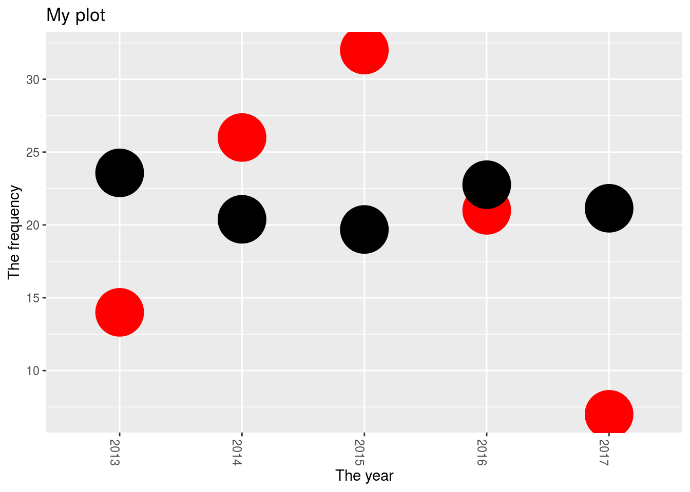
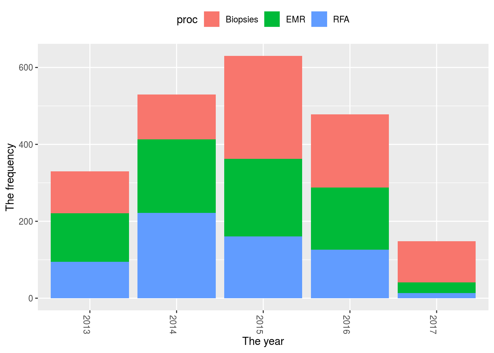
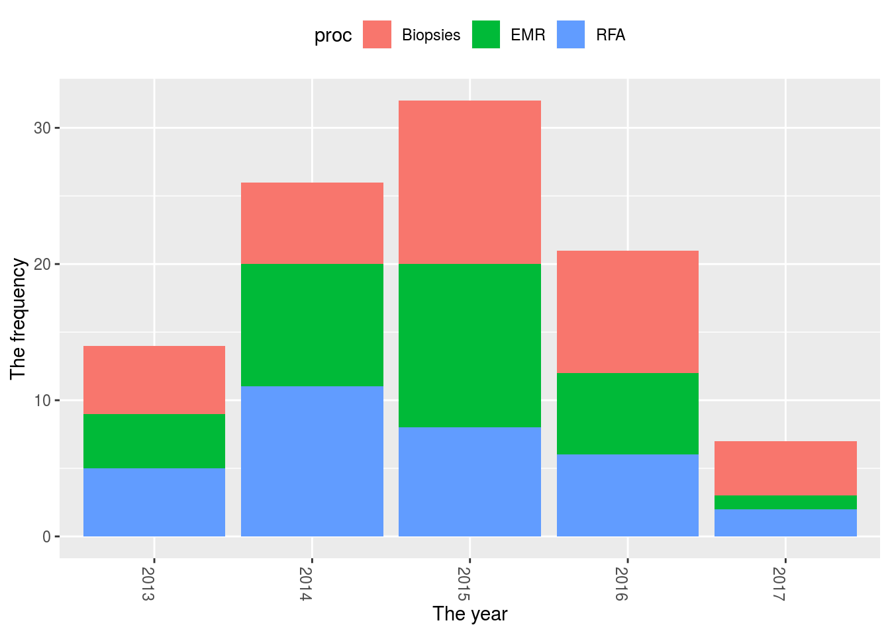
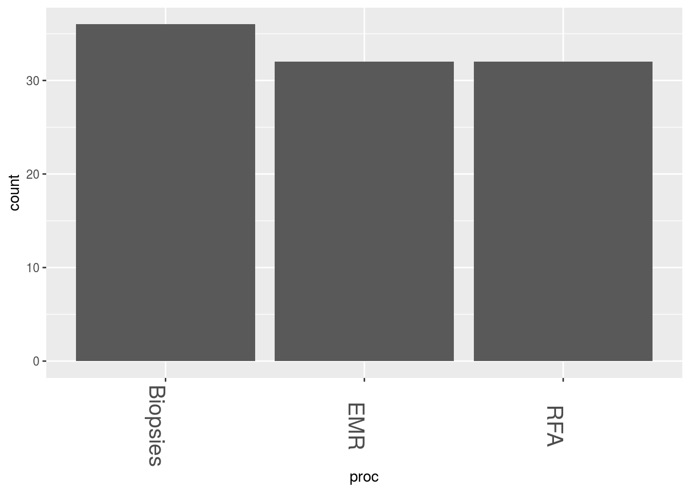

I dont want this to be a primer on everything to do with ggplots. This page is more of a repository for code for plots I often use with ggplot as well as a quick look at ggedit which is designed to make your life easier.
ggplot is based on a grammar of graphics and essentially is built of layers which start with the data. ggplot works best with tidy data whereby data is organised according to observations. There are many ggplots and some good repositories to look at are here: Advanced graphs
(http://sape.inf.usi.ch/quick-reference/ggplot2)
50 top visualisations
All R graphs
How to choose the right graph
proc<-sample(c("EMR","RFA","Biopsies"), 100, replace = TRUE)
#Sample dates
dat<-sample(seq(as.Date('2013/01/01'), as.Date('2017/05/01'), by="day"), 100)
#Generate 20 hospital numbers in no particular order:
HospNum_Id<-sample(c("P433224","P633443","K522332","G244224","S553322","D0739033","U873352","P223333","Y763634","I927282","P223311","P029834","U22415","U234252","S141141","O349253","T622722","J322909","F630230","T432452"), 100, replace = TRUE)
rndm<-sample(seq(0,40),100,replace=T)
df<-data.frame(proc,dat,HospNum_Id,rndm)
df$proc<-as.character(df$proc)Lets just get the data ready first. We want to see how many procedures are done per year.
Tots<-df %>%
mutate(year = format(dat, "%Y")) %>%
group_by(year)%>%
summarise(n = n(),avg=mean(rndm))
kable(Tots)| year | n | avg |
|---|---|---|
| 2013 | 22 | 20.81818 |
| 2014 | 28 | 17.75000 |
| 2015 | 25 | 21.00000 |
| 2016 | 22 | 25.72727 |
| 2017 | 3 | 25.66667 |
so now we can plot this out. Firstly we specify the dataset (Tots) and then the x and y axis from this dataset (year and n). The next layer then specifies how the values are plotted. In this case I have used points (with size parameter and colour parameters) and a line.
ggplot(Tots) + geom_point(aes(x=year,y=n),size=16,colour="red")+
geom_point(aes(x=year,y=avg),size=16,colour="black")+
labs(title="My plot") +
scale_color_manual("",labels = c("SVStart", "SVEnd"), values = c("blue", "red")) +
xlab("The year") +
ylab("The frequency") +
theme(axis.text.x=element_text(angle=-90)) +
theme(legend.position="top")
What about trying to create a stacked barchart? This involves understanding that the data should firstly be in a tidy format and let ggplot do the grouping. For this we’ll use a slightly different dataframe:
Tots2<-df %>%
mutate(year = format(dat, "%Y"))
ggplot(Tots2, aes(x=year, y=rndm,fill=proc)) + geom_bar(stat="identity")+
xlab("The year") +
ylab("The frequency") +
theme(axis.text.x=element_text(angle=-90)) +
theme(legend.position="top")
#Or perhaps you just want a histogram (this can also be done with geom_bar(stat="count") and just specifying the x-axis similar to below)
ggplot(Tots2, aes(x=year,fill=proc))+geom_histogram(stat="count")+
xlab("The year") +
ylab("The frequency") +
theme(axis.text.x=element_text(angle=-90)) +
theme(legend.position="top")
You may also want to change the order of the x-axis in this situation. I’ve always found this tricky, but one way to do it is:
ggplot(Tots2, aes(x=proc))+geom_bar(stat="count")+ theme(axis.text.x=element_text(angle=-90,size=16)) 
#I want to change the order of the bars so I have to change them into factors
Tots2$proc <- factor(Tots2$proc, levels=unique(Tots2$proc))
#or
Tots2$proc <- factor(Tots2$proc, levels=c("EMR", "Biopsies", "RFA"))
ggplot(Tots2, aes(x=proc))+geom_bar(stat="count")+ theme(axis.text.x=element_text(angle=-90,size=16))
For a great cheat-sheet that clearly explains all of the layers of a ggplot, try here
1. ggedit
Because there are many parameters to master in ggplot, ggedit was invented to make this easier. It in a shiny gadget that can be run frmo within RStudio as an add-in
I thought I would also add some plots which are simply easy to produce and great to look at. These are done with the in-built mtcars dataset.
library(dygraphs)
dygraph(nhtemp, main = "New Haven Temperatures") %>%
dyRangeSelector(dateWindow = c("1920-01-01", "1960-01-01"))library(magrittr)
library(highcharter)
highchart() %>%
hc_title(text = "Scatter chart with size and color") %>%
hc_add_series(mtcars, "scatter", hcaes(x = wt, y = mpg, size = drat, color = hp))library(networkD3)
data(MisLinks, MisNodes)
forceNetwork(Links = MisLinks, Nodes = MisNodes, Source = "source",
Target = "target", Value = "value", NodeID = "name",
Group = "group", opacity = 0.4)